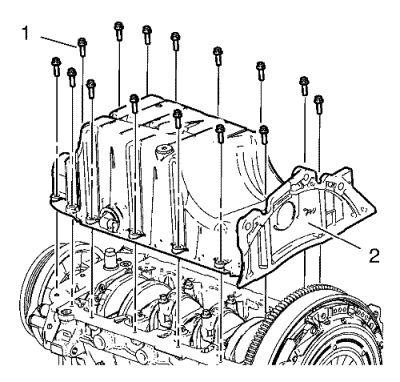

Sustitución del cárter de aceite
Procedimiento de desmontaje
- Abra el capó.
- Elevar el vehículo y soportarlo de manera segura. Consultar Elevación y soporte en alto del vehículo
- Coloque un recipiente colector debajo del vehículo.
- Quite el tornillo de evacuación de aceite.
- Vacíe el aceite de motor.
Precaución:Consulte Precaución con las fijaciones en la sección Prólogo.
- Monte el anillo de junta nuevo y el tornillo de vaciado del aceite, y apriételo a 14 N·m (124 lib. pulg.).
- Bajar el vehículo.
- Retire el tubo del indicador del nivel de aceite. Consultar Sustitución del tubo de la varilla de nivel de aceite → 1.6L LDE, LXV, 1.8L 2H0 y LUW
- Elevar el vehículo y soportarlo de manera segura.
- Retirar el protector de salpicaduras del habitáculo frontal. Consultar Sustitución del protector de salpicaduras del habitáculo frontal
- Desmonte el tubo de escape delantero. Consultar Sustitución del tubo de escape delantero → 2.0L Diésel LNP → LDE,LLU,LXT,LXV,L2W,2H0
- Desmonte los 3 tornillos del cárter del aceite (1, 2) de la caja de cambios.

Nota: Desmonte el cárter de aceite de forma regular por todos los lados con una herramienta adecuada.
- Desmonte los 15 tornillos del cárter de aceite (1) y desmonte el cárter de aceite (2).
Nota: Utilice un destornillador u otra herramienta adecuada.
- Para no dañar el cedazo de aceite (2), asegúrese de que sigue en el cárter de aceite (3). Si el cedazo de aceite se queda atrapado en el bloque motor (1), empuje para que entre en el cárter de aceite.
- Desmonte el cárter de aceite.
Procedimiento de montaje
- Limpie las superficies de sellado.

- Aplique una capa de unos 3,5 mm (0,14 pulgadas) de sellante de cárter de aceite a las uniones (flechas).

Nota: El tiempo de montaje, incluido el apriete, no debe ser superior a 10 minutos.
- Aplique una capa de unos 3,5 mm (0,14 pulg.) de sellante de cárter de aceite (1) tal y como se muestra en la imagen.
Precaución:Consulte Precaución con las fijaciones en la sección Prólogo.
- Monte los 15 tornillos del cárter de aceite (1) en el cárter de aceite (2) y apriételos a 10 N·m (89 lib. pulg.).
- Monte los 3 tornillos del cárter de aceite (1, 2) en el cambio y apriételos a 40 N·m (30 lib. pie).
- Monte el tubo de escape delantero. Consultar Sustitución del tubo de escape delantero → 2.0L Diésel LNP → LDE,LLU,LXT,LXV,L2W,2H0
- Monte el protector contra salpicaduras del compartimento delantero. Consultar Sustitución del protector de salpicaduras del habitáculo frontal
- Bajar el vehículo.
- Monte el tubo del indicador de nivel de aceite. Consultar Sustitución del tubo de la varilla de nivel de aceite → 1.6L LDE, LXV, 1.8L 2H0 y LUW
Nota: Compruebe el nivel de aceite del motor y corríjalo si es necesario.
- Rellene el aceite de motor.
- Cierre el capó.
| © Copyright Chevrolet. All rights reserved |